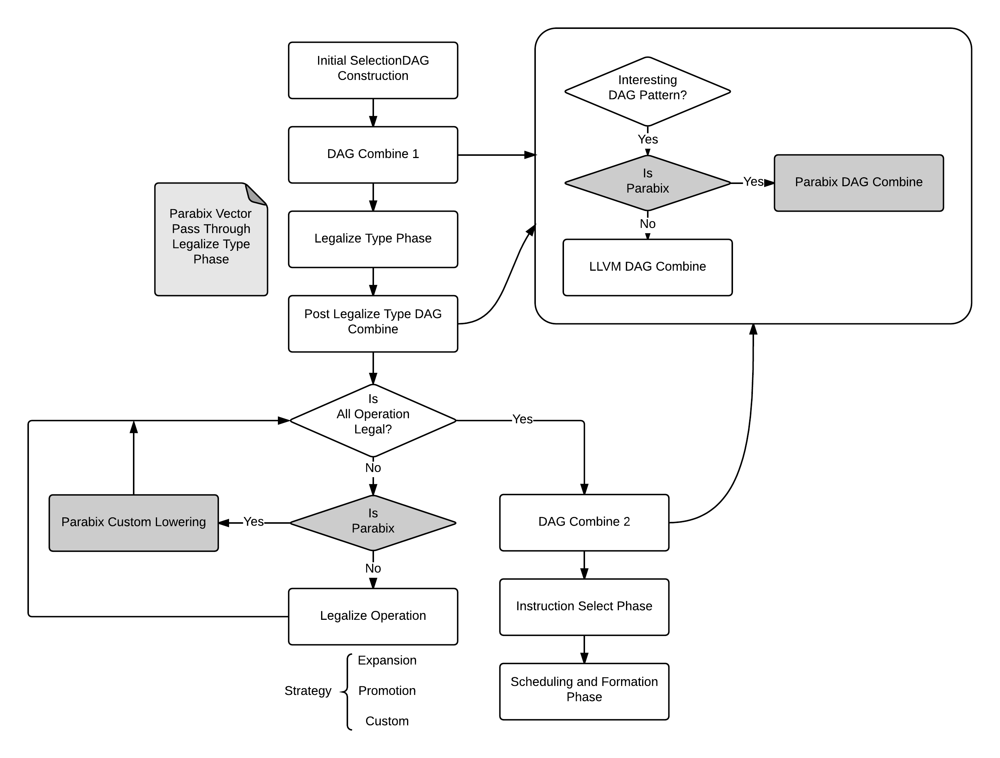
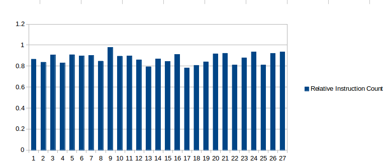
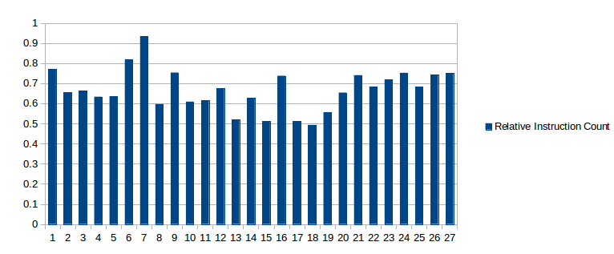
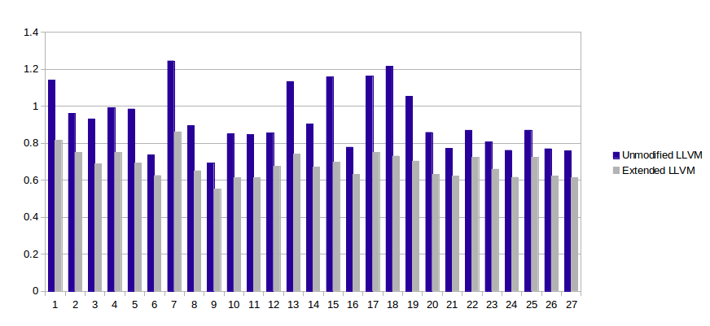

name: title-page class: center, middle layout: true --- ## Systematic Support of Parallel Bit Streams in LLVM Meng Lin Master Thesis Defence --- layout: false # Outline 1. Introduction 2. Design Objective 3. Support of Parabix Vectors * In-place Lowering Strategy * Long Stream Addition 4. Implementation * Custom Lowering * DAG Combiner * Long Stream Shift * Templated Implementation 5. Evaluation --- # Introduction * Parabix technology uses SIMD instructions for parallel text processing. * XML parsing * UTF-8 to UTF-16 transcoder * Regular expression matching --- #Introduction * LLVM is a widely-used compiler infrastructure: -- - Target-independent intermediate representation (IR) + A vector-of-integer type system that fits SIMD properly + `<2 x i64>`, `<32 x i4>`, ... + `%sum = add <2 x i64> %a, %b` -- - Inter-procedural, whole program analysis and optimization. + Analysis with different level of context + Basic block, function, module, link time -- - Just-in-time compilation. + Generate IR on the fly + Good for regular expression matching --- class: center, middle ##Can we use LLVM to support all the SIMD processing requirements of Parabix? ??? If we can, we bring all the benefit of LLVM into Parabix. --- #Yes! We demonstrate in two steps: * _Step 1_: All the IDISA operations can be re-written in IR * _Step 2_: LLVM back end can be extended to generate efficient machine code --- # Introduction * IDISA: Inductive Doubling Instruction Set Architecture 0. Current SIMD support of Parabix. 1. Simple, systematic model with uniform API for SIMD operations. 2. Supports all power-of-2 field width. 3. Cross platform. (Intel SSE, AVX. ARM NEON.) 3. C++ library with templates. ```cpp SIMD_type a = simd<8>::constant<3>(); SIMD_type b = simd<8>::srli<1>(a); SIMD_type c = simd<4>::add(a, b); SIMD_type d = hsimd<16>::packh(a, b); ``` --- # Introduction * IDISA defines five categories of operations. * These operations are the SIMD processing requirements of Parabix * LLVM IR can support all of them --- ## IDISA Vertical Operation * Add, sub, multiplication ```cpp define <16 x i8> @simd_add_8(<16 x i8> %arg1, <16 x i8> %arg2) { entry: %r = add <16 x i8> %arg1, %arg2 ret <16 x i8> %r } ``` -- * Integer comparison ```cpp define <16 x i8> @simd_eq_8(<16 x i8> %arg1, <16 x i8> %arg2) { entry: %r1 = icmp eq <16 x i8> %arg1, %arg2 %r2 = sext <16 x i1> %r1 to <16 x i8> ret <16 x i8> %r2 } ``` --- ##IDISA Horizontal Operation * Use powerful *shuffle_vector* and *bitcast* -- * Packing high .center[ ] ```cpp define <8 x i16> @hsimd_packh_32(<4 x i32> %a, <4 x i32> %b) { entry: %aa = bitcast <4 x i32> %a to <8 x i16> %bb = bitcast <4 x i32> %b to <8 x i16> %rr = shufflevector <8 x i16> %bb, <8 x i16> %aa, <8 x i32> <i32 1, i32 3, i32 5, i32 7, i32 9, i32 11, i32 13, i32 15> ret <8 x i16> %rr } ``` --- ##IDISA Horizontal Operation * Packing low: change the mask to 0, 2, 4, 6, ..., 14 * Packing sign mask ```cpp // signed less than zero // yield <4 x i1> sign mask icmp slt <4 x i32> %a, <4 x i32> <i32 0, i32 0, i32 0, i32 0> ``` * Other operations --- ##IDISA Expansion Operation * Merging high .center[ ] ```cpp define <4 x i32> @esimd_mergeh_16(<8 x i16> %a, <8 x i16> %b) { entry: %rr = shufflevector <8 x i16> %b, <8 x i16> %a, <8 x i32> <i32 4, i32 12, i32 5, i32 13, i32 6, i32 14, i32 7, i32 15> %rr1 = bitcast <8 x i16> %rr to <4 x i32> ret <4 x i32> %rr1 } ``` --- ## Field Movement Operation * Field extraction or insertion: ```cpp // yields <ty> <result> = extractelement <n x <ty>> <val>, <ty2> <idx> // yields <n x <ty>> <result> = insertelement <n x <ty>> <val>, <ty> <elt>, <ty2> <idx> ``` * Constant fill: ```cpp <4 x i32> <i32 1, i32 10, i32 30, i32 99> ``` * Field shuffle: *shufflevector* --- ## Full Register Operation * Write in large-size integer - `i128`, `i256` * All the integer operations LLVM support can be applied. - add / sub / multiply - shifting - llvm.uadd.with.overflow ```cpp declare {i128, i1} @llvm.uadd.with.overflow.i128(i128 %a, i128 %b) declare {i256, i1} @llvm.uadd.with.overflow.i256(i256 %a, i256 %b) ``` ??? Now all the five categories of operations are supported. --- name: idisa-limit #Comparison between IR and IDISA * IR specifies no target information. * IDISA requires different header files for different platform. <hr/> --- template: idisa-limit * ARM NEON ```cpp #include "arm_neon.h" bitblock128_t simd<8>::add(bitblock128_t arg1, bitblock128_t arg2) { return (bitblock128_t)vaddq_u8((uint8x16_t)(arg1), (uint8x16_t)(arg2)); } ``` * Intel SSE2 ```cpp #include "emmintrin.h" bitblock128_t simd<8>::add(bitblock128_t arg1, bitblock128_t arg2) { return _mm_add_epi8(arg1, arg2); } ``` --- name: t1 template: idisa-limit * Best implementation strategies are target specific. * The knowledge of which operations are supported. --- template: t1 - Intel SSE2 ```cpp bitblock128_t simd128<8>::umax(bitblock128_t arg1, bitblock128_t arg2) { return _mm_max_epu8(arg1, arg2); } ``` --- template: t1 * ARM NEON ```cpp bitblock128_t simd128<8>::umax(bitblock128_t arg1, bitblock128_t arg2) { bitblock128_t high_bit = simd128<8>::constant<(128)>(); return simd_xor(simd128<8>::max(simd_xor(arg1, high_bit), simd_xor(arg2, high_bit)), high_bit); } ``` --- layout: true #Comparison between IR and IDISA * IR tells what to implement. * IDISA tells how to implement. <hr/> * IR ```cpp add <32 x i4> %a, %b ``` --- --- * IDISA for SSE2 ```cpp simd<1>::ifh(simd<(8)>::himask(), simd<(8)>::add(arg1, simd_and(simd<(8)>::himask(), arg2)), simd<(8)>::add(arg1, arg2)) ``` --- * IDISA `simd<4>::add` compiled to IR: ```cpp %and.i.i.i = and <2 x i64> %b, %m0 %0 = bitcast <2 x i64> %a to <16 x i8> %1 = bitcast <2 x i64> %and.i.i.i to <16 x i8> %add.i.i10.i = add <16 x i8> %0, %1 %2 = bitcast <16 x i8> %add.i.i10.i to <2 x i64> %3 = bitcast <2 x i64> %b to <16 x i8> %add.i.i.i = add <16 x i8> %0, %3 %4 = bitcast <16 x i8> %add.i.i.i to <2 x i64> %and.i.i.i.i = and <2 x i64> %2, %m0 %and.i.i7.i.i = and <2 x i64> %4, %m1 %or.i.i.i.i = or <2 x i64> %and.i.i.i.i, %and.i.i7.i.i ret <2 x i64> %or.i.i.i.i ``` --- layout: false #Comparison between IR and IDISA * IR handles illegal operations in the back end * IDISA inline-extend illegal operations in the front end <hr/> -- * IDISA loses operation semantic immediately. * Late extension enables more front end optimization; e.g. constant folding ```cpp %c = xor <4 x i32> %c, %c %a = add <32 x i4> %a, %c ``` The addition can be optimized away. -- * Simplify peephole optimizations, because the patterns are easier to recognize ```cpp %a = shl i128 %A, 1 %b = lshr i128 %B, 127 %r = or i128 %a, %b ``` Recognized as long stream shifting. --- #Support Parabix with LLVM We demonstrate in two steps: .green[ * _Step 1_: All the IDISA operations can be re-written in IR ✔ ] * _Step 2_: LLVM back end can be extended to generate efficient machine code --- ## Efficient Code Generation * The performance of the LLVM back end should be at least as good as IDISA. -- * Current LLVM does not generate good machine code. - Small-element vectors - i1, i2, i4 - Shufflevector for critical Pararbix operation - packing, merging - Long integer addition / shifting - add / shift i128, i256 -- * LLVM needs to be extended. --- layout: true ## Vector of Small Element --- * LLVM default: promote element strategy. -- * `v32i1` fits in general 32-bit register. * Bitcasting `v32i1` to `i32` generates better code. --- * _LLVM legality_: - An operation is legal if it is supported by the target machine. - Unsupported types are illegal types. * _Redefined legality_: - A vector type is legal if it has the same size in bits with one of the target's registers. - `v32i1`, `v64i1`, `v32i4` -- * Operations on these newly-legalized types need to be handled. .center[ `add <32 x i1> %a, %b` ⇩ `xor i32 %a, %b` ] --- layout: false ## In-place Lowering Overview * LLVM default legalize process VS In-place lowering --- ## In-place Lowering * `i2` vectors - Circuit Minimization Problem * `i4` vectors - Inductive Doubling Principle --- ### Inductive Doubling Principle --- ## Extend LLVM  --- #Support Parabix with LLVM We demonstrate in two steps: .green[ * _Step 1_: All the IDISA operations can be re-written in IR ✔ ] .yellow[ * _Step 2_: LLVM back end can be extended to generate efficient machine code ] --- layout: true # Performance --- * Micro benchmark on `i1`, `i2`, `i4` vector operations - Similar performance with IDISA - Much better than the unmodified LLVM (in relative CPU cycles) --- * XML well-formedness check (xmlwf) with IR transposition. --- * Long stream addition with regular expression matching --- * Long stream shifting with regular expression matching  --- * Long stream addition / shifting together with 256-bit SIMD registers  --- layout: false ## Scalability * Long stream addition / shifting all together * Relative instruction count on 256-bit SIMD registers versus 128-bit registers  --- ## Add with carry code for unmodified LLVM ```cpp declare {i128, i1} @llvm.uadd.with.overflow.i128(i128 %a, i128 %b) ;return a pair of sum and carry-out bit {i128, i1} @add_with_carry(i128 %a, i128 %b, i1 %carryin) { entry: cin = zext %carryin to i128 {s1, c1} = @llvm.uadd.with.overflow.i128(%a, %b) {sum, c2} = @llvm.uadd.with.overflow.i128(s1, cin) cout = or i1 c1, c2 ret {sum, cout} } ``` --- #Support Parabix with LLVM We demonstrate in two steps: .green[ * _Step 1_: All the IDISA operations can be re-written in IR ✔ ] .green[ * _Step 2_: LLVM back end can be extended to generate efficient machine code on X86 SSE2 and AVX2 ✔ ]